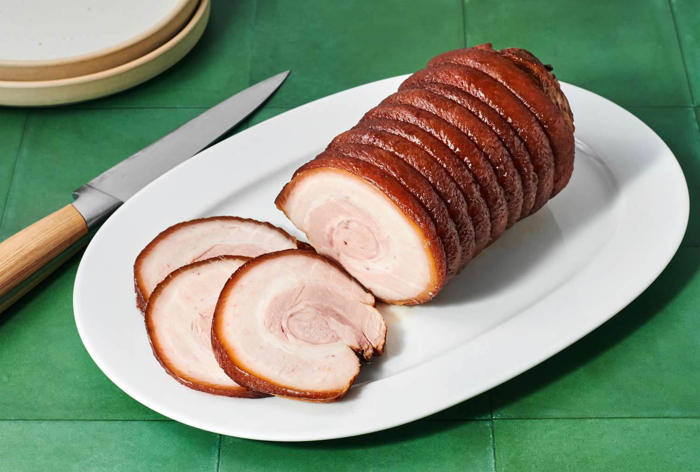

Chashu (braised pork)

Ingredients
- 800g pork belly
- 1 cup soy sauce
- 1 cup mirin
- 1 cup sake
- 1 cup water
- 1/2 cup sugar
- 4 cloves garlic, minced
- 1-inch piece of ginger, sliced
Instructions
-
Place the pork belly in a large pot and fill it with enough water to
cover the meat. Bring it to a boil and cook for 3-4 minutes to remove
any impurities. Drain and rinse the pork belly.
-
In the same pot, combine soy sauce, mirin, sake, water, sugar, minced
garlic, and sliced ginger. Stir well to dissolve the sugar.
-
Add the pork belly back into the pot and bring the mixture to a boil.
-
Reduce the heat to low, cover the pot, and let it simmer for about 1.5
to 2 hours until the pork is tender. Occasionally turn the pork belly to
ensure even cooking and absorption of flavors.
-
Once the pork is tender, remove it from the pot and let it cool. Slice
the chashu into thin pieces, and it's now ready to be used as a topping
for your ramen.
Specificity
Chashu is a traditional Japanese braised pork that is commonly used as a
topping in ramen dishes.
back to home